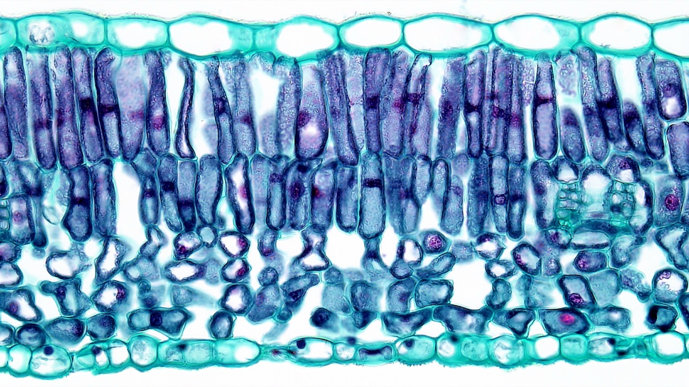
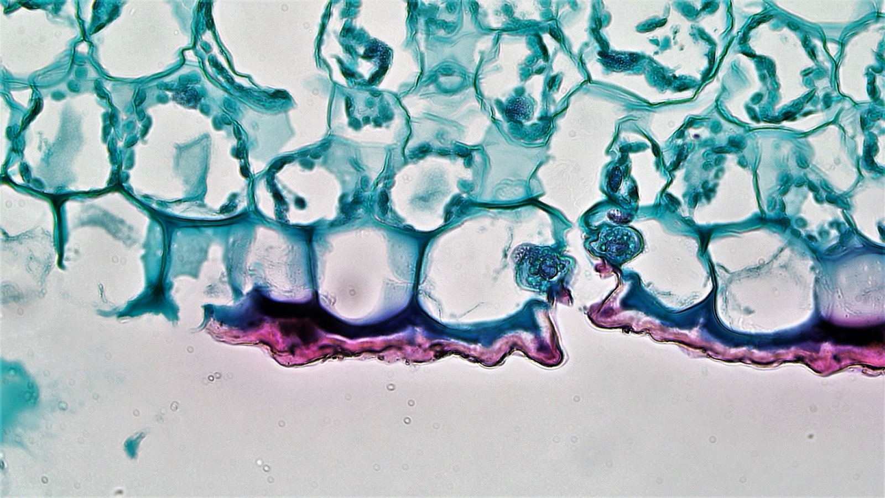
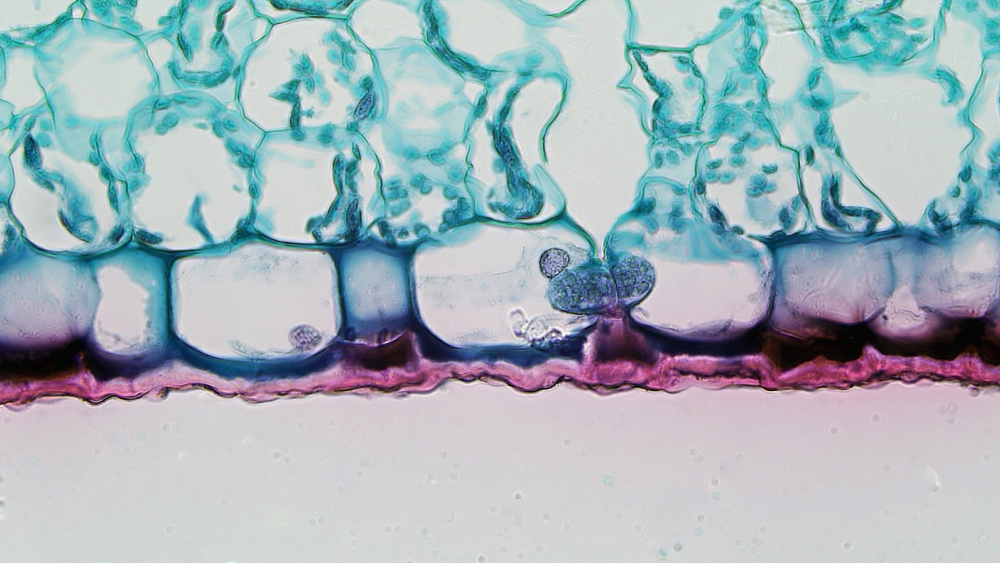
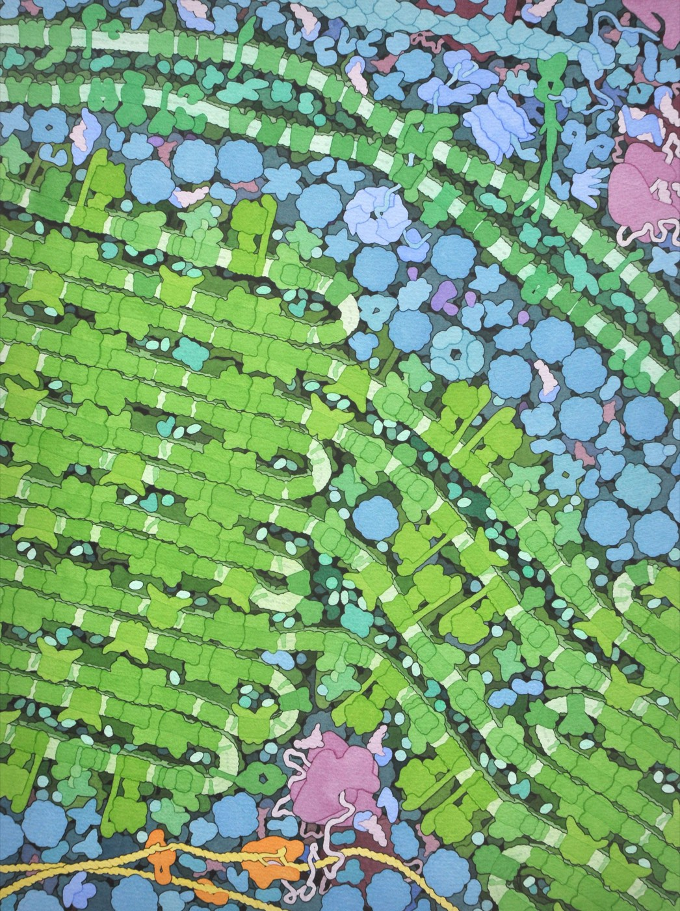
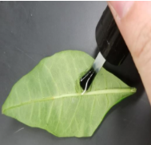

2.2 Inside a Leaf
Chapter 2.1 ended with a piece of very hard chemistry: taking carbon dioxide and water — two of the most stable, lowest-energy molecules there are — and forcing them uphill into sugar, using light. Hard chemistry needs specialised apparatus. The apparatus is a leaf, and every part of it is there for a reason.
Four zooms, from a branch to a membrane
Photosynthesis does not happen "in a plant" in any useful sense, any more than digestion happens "in a person". It happens in a particular place, inside a particular organelle, on a particular membrane. Getting from one end of that sentence to the other takes four steps.
![Four pictures in a row, each a magnified view of a small square marked on the one before it, joined by thin lines. First, labelled leaf: a small leafy green shoot, with a square marked on one leaf. Second, labelled leaf tissue: a cut block of leaf seen from the side, with a thin top surface, a row of tall column-shaped cells, loosely packed rounded cells with air spaces between them, and a bottom surface with a small pore; a square is marked on one tall cell. Third, labelled cell: that cell enlarged, with a thick cell wall, a large blue-grey central vacuole, a nucleus pressed to one side, and many small green chloroplasts lining the inside edge; a square is marked on one chloroplast. Fourth, labelled chloroplast: that chloroplast cut open, with two outer membranes, and inside several stacks of flat green discs, like stacks of coins, joined by thin membranes and labelled thylakoids, sitting in a pale green fluid labelled stroma.](../images/u2/leaf-to-chloroplast.jpeg)
Keep the last frame in your head. A chloroplast is not a bag of green liquid. It is a bag of green liquid with an elaborate internal membrane system, and the reason for that architecture is coming.
The layers, and the problem each one solves
Cut a leaf across and you find six or seven distinct layers. It is tempting to learn them as a list. Do not. Learn them as answers, because a leaf is solving four problems at once and each layer is part of a solution.
Problem 1 — get light in without drying out
A leaf is thin, flat, held out in the wind and full of water. Left alone it would dry out within hours. So the top surface is coated in a cuticle: a waxy, waterproof film secreted by the cells beneath it.
But a waterproof leaf that was also opaque would be useless. So the cuticle is transparent, and so is the layer under it — the upper epidermis, a single row of clear, box-shaped cells with almost no chloroplasts in them. That is not an oversight. Chloroplasts in the epidermis would absorb light before it reached the cells that need it. The epidermis is a window, and windows are supposed to be empty.
Problem 2 — put the chloroplasts where the light is
Directly under that window sit the palisade mesophyll cells: tall, column-shaped, packed shoulder to shoulder and standing on end. They contain most of the chloroplasts in the leaf, and they are where most photosynthesis happens.
Two design decisions there. Standing them upright means light passes down through the long axis of each cell, so it travels through more chloroplast than it would crossing a flat cell. Packing them tightly at the very top means light meets them before anything else has had a chance to absorb it.
Problem 3 — get carbon dioxide to cells buried inside a solid organ
This is the problem people forget, and it is the one that explains the strangest feature of a leaf.
Below the palisade layer is the spongy mesophyll: rounded cells arranged loosely, with big air gaps between them. It looks like bad packing. It is nothing of the sort. Carbon dioxide is only 0.04% of the atmosphere and it has to reach every photosynthesising cell in the leaf. Diffusion through air is roughly ten thousand times faster than diffusion through water, so a leaf full of interconnected air spaces gets CO₂ to its interior quickly, while a solid leaf would starve.

That is also why leaves are thin. Diffusion is fast over short distances and hopeless over long ones — a leaf a centimetre thick could not supply its middle.
Problem 4 — deliver water and take sugar away
Running through the spongy layer are the veins, also called vascular bundles. Each carries two kinds of tube: xylem, bringing water up from the roots, and phloem, carrying dissolved sugar away to wherever the plant needs it. Veins branch until no cell in the leaf is more than a few cells from one — the same logic as capillaries in your own tissue.
Finally the lower epidermis closes the underside, and it is pierced by the pores that make the whole thing work.
The stoma, and the compromise the whole leaf is built around
A stoma (plural stomata, from the Greek for mouth) is a pore through the lower epidermis. It is the leaf's only doorway for gas. Carbon dioxide goes in through it; oxygen and water vapour come out.
Each stoma is flanked by two curved guard cells. Unlike the rest of the epidermis they do have chloroplasts, and unlike the rest of the epidermis they can change shape. When the plant pumps potassium ions into them, water follows by osmosis, they swell, and their unevenly thickened walls make them bow apart — opening the pore. Let the ions out and they deflate and close it.
That is Unit 1 doing work. Water moving into the guard cells is osmosis: water crossing a membrane from where solute is dilute to where it is concentrated. The plant does not pump water directly — it cannot. It pumps ions and lets water follow. Exactly the same trick your own cells use, and exactly the trick that fails in cystic fibrosis.


Now the compromise. Every second the stomata are open, carbon dioxide diffuses in — and water vapour diffuses out, far faster, because the inside of a leaf is saturated and the air outside usually is not. A plant loses hundreds of times more water molecules than it gains carbon dioxide molecules.
Open the stomata and you can photosynthesise but you lose water. Close them and you save water but photosynthesis stops within minutes, because the CO₂ inside the leaf runs out.
Every land plant on Earth is a solution to that trade-off, and it explains a great deal of plant form. Cacti open their stomata only at night. Pine needles sink their stomata into pits to slow the escape. Most plants keep the majority of their stomata on the underside of the leaf, out of direct sun and moving air, for the same reason.
It also explains something you will measure in 2.4: on a hot dry afternoon, photosynthesis in a real plant often falls even though the light is at its brightest. The plant has shut the door.
Inside a chloroplast — and why plants are green
Go back to the last frame of the zoom sequence above. A chloroplast has two outer membranes, and then, inside, a third membrane system folded into flattened discs called thylakoids. Thylakoids are stacked into piles — each pile is a granum — and the fluid surrounding all of it is the stroma.
Two compartments, two jobs:
- The thylakoid membranes hold the chlorophyll and the machinery that captures light. Stacking them into grana multiplies the membrane area you can fit into one organelle, and area is exactly what you need when your job is catching photons.
- The stroma is a fluid full of enzymes. It is where carbon dioxide is actually built into sugar.
You have seen this architectural idea before, and you will see it again in 2.5. Whenever a cell needs a lot of one process, it grows a lot of folded membrane and puts the process on it.

Now fly into one. This animation from HHMI BioInteractive zooms from a leaf down into its cells and then into a chloroplast, so you can see how the thylakoid stacks and the stroma fit together in three dimensions.
Why green?
Chlorophyll is the pigment that absorbs light for photosynthesis, and it is very good at absorbing blue light and red light. It is bad at absorbing green — green light is mostly reflected or transmitted straight through.
So the answer to "what makes plants green" is slightly counter-intuitive: green is the colour a plant is throwing away. You are not seeing the light that powers the plant; you are seeing the light it could not use. A leaf that appeared black would be absorbing more.
Chlorophyll is not the only pigment in a leaf. Carotenoids absorb in the blue-green region and pass the energy on, and they are orange. They are present all summer, hidden under the far more abundant chlorophyll. In autumn, deciduous trees break the chlorophyll down and reclaim its nitrogen before dropping the leaf — and the carotenoids that were there all along become visible. Autumn colour is not something appearing; it is something being taken away.
Label it, then justify it
The first half of what follows is the pre-lab labelling task from your anchor guide. The second half is the part the labelling exists for: saying what each structure does. Anyone can memorise seven words in order from the top of a diagram. Being able to say why the spongy layer is spongy is a different thing entirely, and it is what the standard asks for.
Label the leaf
Interactive- The palisade cells are at the top and the spongy cells below. Suppose they were swapped. Give two specific reasons why the leaf would work less well.
- Why does the upper epidermis have almost no chloroplasts, when it is the layer closest to the light?
- A leaf's air spaces make up a large fraction of its volume. What would happen to the rate of photosynthesis if you filled them with water — and what does that predict about a leaf that has been rained on and pushed under the surface of a puddle?
- Most stomata are on the lower surface. Give one reason connected with water and one connected with light.
- Water lilies have their stomata on the upper surface. Explain why, using the same reasoning.
Seeing stomata for yourself
Stomata are about a fiftieth of a millimetre across, which is well within reach of a school microscope — but a whole leaf is far too thick and too green to see through. The trick used in the anchor guide's lab gets round that neatly.

What you see under the microscope is a crowded pavement of irregular epidermal cells, and scattered among them, pairs of curved guard cells with a slit between them. Count them over a known area and you can work out stomatal density — which varies enormously between species, between the top and bottom of the same leaf, and, interestingly, between leaves grown at different carbon dioxide concentrations. Fossil leaves have been used to reconstruct ancient atmospheres on exactly that basis.
Where this goes next
You now know where photosynthesis happens, right down to which membrane. What you still do not know is what actually happens there. The overall equation — carbon dioxide plus water, plus light, gives glucose plus oxygen — is true, and it is also almost useless as an explanation, because it hides every interesting question. Where does the oxygen come from, the CO₂ or the water? What is the light physically doing? How does a carbon atom get from a gas into a sugar?
Chapter 2.3 opens the chloroplast up. It turns out that photosynthesis is not one process but two, running in the two compartments you just met, each feeding the other.
Quick check
Auto-marked. Get one wrong and it will point you back to the section that covers it.
Why is "photosynthesis happens in a plant" not a good enough answer?
Saying photosynthesis happens in a plant is like saying digestion happens in a person. The four zooms exist to get you from that sentence to "on the thylakoid membranes, and in the stroma around them" — which is the level at which 2.3 becomes possible.
A student describes a chloroplast as a small bag of green liquid. What does that description leave out?
The internal architecture is the whole reason for the last zoom. Two compartments separated by a membrane is what allows photosynthesis to be two processes rather than one — which is the sentence 2.3 starts from.
The upper epidermis is the layer closest to the light, yet it holds almost no chloroplasts. Why not?
The epidermis is a window, and windows are supposed to be empty. Every layer of a leaf is an answer to a problem, and this one is solving "let light through while keeping water in".
Palisade cells are column-shaped and stand on end, directly beneath the upper epidermis. What does that shape buy the leaf?
Two separate decisions are at work: standing the cells upright lengthens the path light takes through each one, and packing them at the very top means the light meets them before anything else has absorbed it. Both answer the same problem — put the chloroplasts where the light is.
A leaf is pushed under a puddle and its air spaces flood. What happens to the rate of photosynthesis?
The spongy layer looks like bad packing and is nothing of the sort. It is a delivery network for a gas that makes up 0.04% of the air — and it is also why leaves are thin, because diffusion is hopeless over long distances.
Leaves are thin — a fraction of a millimetre. What would go wrong with a leaf a centimetre thick?
Thinness and sponginess are one answer to one problem. Carbon dioxide is 0.04% of the air and has to arrive at every photosynthesising cell by diffusion alone, so the geometry of a leaf is built around how far a gas can travel — which is not far.
Most plants keep their stomata on the underside of the leaf. Water lilies have theirs on top. Why is that not a contradiction?
A rule you can only apply to the usual case is not a rule you have understood. Every land plant is a solution to the same trade-off, and the odd-looking cases — cacti opening at night, sunken pine stomata, lilies on top — are the same reasoning in different conditions.
A cactus keeps its stomata shut all day and opens them at night, when there is no light to photosynthesise by. Why is that not self-defeating?
A cactus has not escaped the compromise — it has moved its gas exchange to the hours when the exchange rate is least punishing. Water vapour leaves because the inside of a leaf is saturated and the air outside is not, so a plant that opens into cool damp air pays a much smaller price for the same carbon.
On a hot, dry, bright afternoon the rate of photosynthesis in a real plant often falls, even though the light is at its brightest. Why?
Open the stomata and you photosynthesise but lose water; close them and you save water but run out of CO₂ within minutes. On a hot afternoon the plant takes the second option, and the cost shows up in the rate. You will measure this trade-off again in 2.4.
A gardener sprays a leafy plant with a clear film that seals its stomata, hoping to stop it wilting in hot weather. The plant stays turgid — and stops growing. Why?
There is no way to shut the door on water leaving without shutting it on carbon dioxide arriving, because one pore carries both. That is the compromise in its simplest form: the plant that never wilts is also the plant that never grows.
Leaves look green. What does that colour actually tell you?
You are not looking at the light that powers a plant; you are looking at the light it rejected. A leaf that appeared black would be absorbing more. The same logic explains autumn colour: the orange carotenoids were there all summer, hidden under chlorophyll that has now been taken away.
A plant is grown under a lamp emitting only green light, as bright as an ordinary white lamp. What would you expect?
The colour of a leaf is a statement about what it rejects, and a green lamp hands a plant almost nothing but the rejected part of the spectrum. Growers exploit the other half of the same fact: blue and red lamps put energy exactly where chlorophyll can take it.
To look at stomata you paint clear nail polish onto a leaf, let it dry, and peel it off with tape. Why not just look at the leaf?
The cast records the shape of every epidermal cell, so counting stomata over a known area gives you stomatal density. That measurement has been made on fossil leaves to reconstruct the carbon dioxide levels of ancient atmospheres — which is 2.8 arriving early.
A student has a good nail polish cast of a leaf's lower surface under the microscope. Which question can the cast not answer?
A cast is an impression of a surface and nothing else, which makes it excellent for shape and position and useless for anything inside a cell. That limit is also the point of the method: it throws away the thickness and the green that made a living leaf impossible to see through.